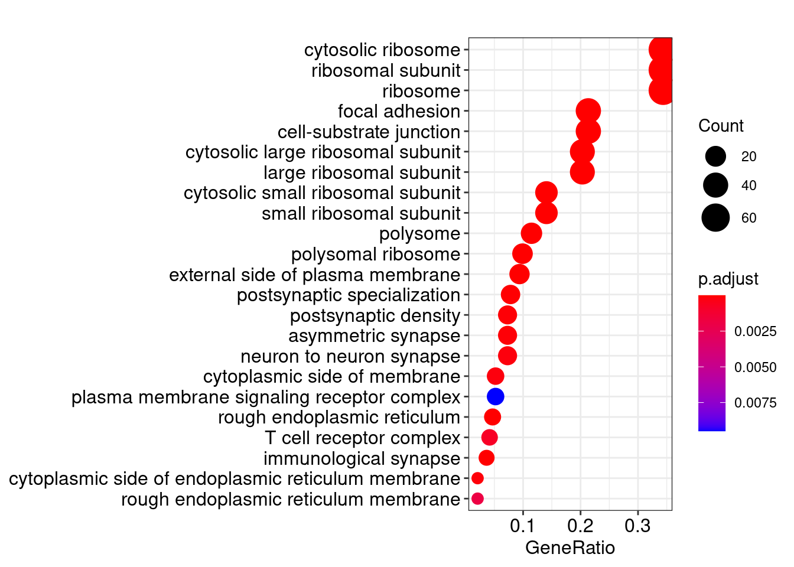
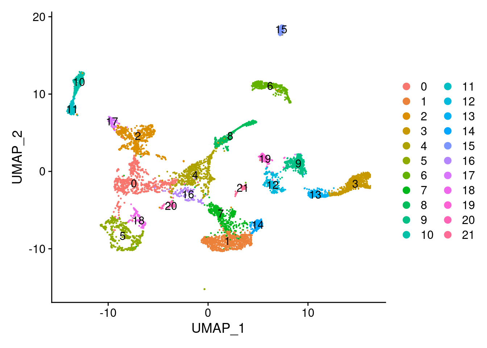

Chapter 6 Single-cell transcriptomic landscape of human blood cells
Reproducible Research
Download data from GEO
- Single-cell Transcriptomic Landscape of Human Blood Cells
- GSM4201332 BM1
- GSM4201333 BM2
- GSM4201334 BM3
- Single-cell transcriptome landscape of adult HSPC
- GSM4793029 B cell population
- GSM4793030 NK cell population
- GSM4793031 T cell population
- GSM4793032 Monocyte population
- GSM4793033 Neutrophil population
- GSM4793034 Erythrocyte population
6.1 Read scRNA data
Data are located in ./ABC/data/GSE137864_HSPC/.
6.1.1 read HSPC data
library(Seurat)
library(ggplot2)
library(Matrix)##
## Attaching package: 'Matrix'## The following object is masked from 'package:S4Vectors':
##
## expand## The following objects are masked from 'package:tidyr':
##
## expand, pack, unpack## HSPC
dir_10x <- "./ABC/data/GSE137864_HSPC/"
# change names as Read10X needed.
dir(dir_10x)## [1] "barcodes.tsv.gz" "features.tsv.gz"
## [3] "GPL20301.soft" "GSE137864_series_matrix.txt.gz"
## [5] "matrix.mtx.gz"HSPC_raw <- Read10X(dir_10x)
HSPC_meta <- GEOquery::getGEO("GSE137864", destdir="./ABC/data/GSE137864_HSPC/")## Setting options('download.file.method.GEOquery'='auto')## Setting options('GEOquery.inmemory.gpl'=FALSE)## Found 1 file(s)## GSE137864_series_matrix.txt.gz## Using locally cached version: ./ABC/data/GSE137864_HSPC//GSE137864_series_matrix.txt.gz##
## ── Column specification ────────────────────────────────────────────────────────
## cols(
## ID_REF = col_character(),
## GSM4201332 = col_character(),
## GSM4201333 = col_character(),
## GSM4201334 = col_character()
## )## Using locally cached version of GPL20301 found here:
## ./ABC/data/GSE137864_HSPC//GPL20301.softHSPC_meta <- Biobase::pData(HSPC_meta$GSE137864_series_matrix.txt.gz)
colnames(HSPC_raw) %>% head## [1] "HSC_BM1_L1_bar1" "HSC_BM1_L1_bar2" "HSC_BM1_L1_bar3" "HSC_BM1_L1_bar5"
## [5] "HSC_BM1_L1_bar6" "HSC_BM1_L1_bar7"6.1.2 read Blood Cells data
## Blood Cells
BC_raw <- read.csv("./ABC/data/HumanBloodCells/GSE149938_umi_matrix.csv", check.names=F)
BC_mat <- Matrix( t(as.matrix(BC_raw)) )
dim(BC_raw)## [1] 7643 19813colnames(BC_mat) %>% head## [1] "BNK_spBM1_L1_bar25" "BNK_spBM1_L1_bar26" "BNK_spBM1_L1_bar27"
## [4] "BNK_spBM1_L1_bar28" "BNK_spBM1_L1_bar29" "BNK_spBM1_L1_bar30"BC_meta <- GEOquery::getGEO("GSE149938", destdir="./ABC/data/HumanBloodCells/")## Found 1 file(s)## GSE149938_series_matrix.txt.gz## Using locally cached version: ./ABC/data/HumanBloodCells//GSE149938_series_matrix.txt.gz##
## ── Column specification ────────────────────────────────────────────────────────
## cols(
## ID_REF = col_character(),
## GSM4793029 = col_character(),
## GSM4793030 = col_character(),
## GSM4793031 = col_character(),
## GSM4793032 = col_character(),
## GSM4793033 = col_character(),
## GSM4793034 = col_character()
## )## Using locally cached version of GPL20301 found here:
## ./ABC/data/HumanBloodCells//GPL20301.softBC_meta <- Biobase::pData(BC_meta$GSE149938_series_matrix.txt.gz)6.1.3 Merge two mats to CreateSeuratObject
# Merge two mats
dim(HSPC_raw)## [1] 19813 1813dim(BC_mat)## [1] 19813 7643ABC_HSPC_mat <- cbind(HSPC_raw, BC_mat)
dim(ABC_HSPC_mat)## [1] 19813 9456# distinguish protein-coding genes and lncRNAs
# gtf: ftp://ftp.ensembl.org/pub/release-84/gtf/homo_sapiens/
# add genesymols annotation
gtf_fn <- "~/data/drug_seq/rawdata/genome/Homo_sapiens.GRCh38.102.gtf"
gtf <- rtracklayer::import(gtf_fn)
gtf_df <- dplyr::filter(as.data.frame(gtf), type=="gene") %>%
dplyr::select(gene_id, gene_name, gene_biotype)
ABC_HSPC_gene <- as.data.frame(rownames(ABC_HSPC_mat))
colnames(ABC_HSPC_gene) <- "gene_name"
gene_types <- dplyr::left_join(ABC_HSPC_gene, gtf_df)## Joining, by = "gene_name"protein_coding_genes <- dplyr::filter(gene_types, gene_biotype=="protein_coding") %>% dplyr::select(gene_name) %>% unlist(use.names = FALSE) %>% unique()
# should use NNONCODE website (http://www.noncode.org/datadownload/NONCODEv6_human_hg38_lncRNA.gtf.gz)
lncRNAs <- dplyr::filter(gene_types, gene_biotype=="lncRNA") %>% dplyr::select(gene_name) %>% unlist(use.names = FALSE)
# 7551 single cells
ABC <- CreateSeuratObject(count = ABC_HSPC_mat[protein_coding_genes,], project = 'ABC', min.cells = 5, min.features = 1000 )6.1.3.1 add celltype info.
# cell types
cell_types <- readxl::read_xlsx("./ABC/data/blood_ceel_types.xlsx", sheet="Sheet1")
ABC_meta <- dplyr::left_join(ABC@meta.data, cell_types)## Joining, by = "orig.ident"ABC_meta$group <- factor(ABC_meta$group, levels=c("HSPC", "Bcells", "NK",
"Tcells", "Monocytes", "Neutrophils" , "Erythrocytes" ) )
ranked_celltypes <- c("HSC", "BNK", "LMPP", "MLP", "MPP", "CMP", "MEP", "GMP", "memB", "preB", "proB", "immB", "regB",
"naiB", "plasma", "CLP", "NKP", "kineNK", "toxiNK", "CD4T", "CD8T", "claM", "cMOP", "hMDP",
"interM", "nonM", "preM", "metaN", "matureN", "proN", "myeN", "ery")
ABC_meta$orig.ident <- factor(ABC_meta$orig.ident, levels=ranked_celltypes )
rownames(ABC_meta) <- rownames(ABC@meta.data)
ABC@meta.data <- ABC_meta
# HSPC_types <- unique(gsub("_.*","",colnames(HSPC_raw)))
# HSPC_types <- c("HSC", "BNK", "LMPP", "MLP", "MPP", "CMP", "MEP", "GMP" )
#
# ABC_meta[which(ABC@meta.data$orig.ident %in% HSPC_types ), "group"] <- "HSPC"
#
# PB_types <- c("memB", "regB")
#
#
# Neutrophils_types <- c("metaN", "myeN", "matureN", "proN", "myeN" )
#
# NK_cells_types <- c("CLP", "NKP", "kineNK", "toxiNK")
#
# Bcells_types <- c("preB", "proB", "immB", "regB", "naiB", "plasma")
# Tcells_types <- c("CD4T", "CD8T")
#
# Erythrocytes_types <- c("ery")
# Monocytes_types <- c("claM", "cMOP", "hMDP", "interM", "nonM", "preM")6.1.3.2 线粒体
ABC[["percent.mt"]] <- PercentageFeatureSet(ABC, pattern = "^MT-")
head(ABC@meta.data)## orig.ident nCount_RNA nFeature_RNA group cellname percent.mt
## HSC_BM1_L1_bar1 HSC 153232 4697 HSPC HSC 0
## HSC_BM1_L1_bar2 HSC 61300 3807 HSPC HSC 0
## HSC_BM1_L1_bar3 HSC 61831 4034 HSPC HSC 0
## HSC_BM1_L1_bar5 HSC 30637 4156 HSPC HSC 0
## HSC_BM1_L1_bar6 HSC 37540 4439 HSPC HSC 0
## HSC_BM1_L1_bar7 HSC 30843 4367 HSPC HSC 06.2 Figure 1B
# VlnPlot(ABC, features=c('nFeature_RNA'), group.by = "group")
VlnPlot(ABC, features=c('nFeature_RNA'), group.by = "orig.ident")
6.3 Figure 1C
#boxplot all genes
boxplot(ABC@meta.data$nFeature_RNA)
6.4 Figure 1D
6.4.1 LogNormalize
ABC <- NormalizeData(object=ABC,
normalization.method= 'LogNormalize',
scale.factor=10000 )6.4.2 筛选高变基因
ABC <- FindVariableFeatures(ABC,
selection.method = "vst",
nfeatures = 2000)
head(VariableFeatures(ABC))## [1] "GNLY" "CLC" "HBG1" "HBG2" "JCHAIN" "DEFA3"ABC <- ScaleData(ABC)## Centering and scaling data matrix6.4.3 筛选高变基因 and PCA降维
hvg <- VariableFeatures(object = ABC)
ABC <- RunPCA(ABC, features = hvg )## PC_ 1
## Positive: PRDX2, BLVRB, HBD, AHSP, CA1, CA2, HMBS, GYPA, UROD, KLF1
## RHAG, HBB, GYPB, HBA1, ALAS2, SMIM1, TMEM14C, HBM, GATA1, HBA2
## TFRC, UBE2T, HEMGN, SLC4A1, MYL4, HBQ1, GFI1B, FECH, NME4, CKS2
## Negative: CTSS, FGR, COTL1, RGS2, S100A11, TYROBP, CYBB, KLF2, MNDA, C5AR1
## FCN1, SERPINA1, LILRB2, ITGAM, TMEM154, FCER1G, FPR1, S100A12, PLBD1, LST1
## ALOX5AP, JUN, S100A8, CKAP4, LTF, S100A9, PADI4, CYP4F3, SLC11A1, TNFRSF1B
## PC_ 2
## Positive: S100A9, S100A8, MNDA, LYZ, FCN1, FGR, C5AR1, PLBD1, SERPINA1, CYBB
## S100A12, ITGAM, FPR1, TYROBP, G0S2, FCER1G, CSTA, SLC11A1, COTL1, APOBEC3A
## LILRB2, S100A11, CYP4F3, S100A6, TNFRSF1B, LTF, PGLYRP1, CKAP4, CEBPD, LCN2
## Negative: MIF, MZB1, CD79A, CD69, CD79B, IGLL1, HLA-DRB5, VPREB3, SPINK2, DNTT
## STMN1, BLNK, SSR4, VPREB1, C1QBP, SMIM24, PAX5, DAD1, GSTP1, PDLIM1
## HOPX, TSC22D1, ARID5B, PKIG, PCDH9, BANK1, CYTL1, JCHAIN, XBP1, CD9
## PC_ 3
## Positive: CD79A, PAX5, HBM, MS4A1, HBA2, SLC4A1, TCL1A, ALAS2, GYPB, CD79B
## GYPA, HBA1, FCRL1, VPREB3, EIF1AY, AHSP, SELENBP1, CA1, IKZF3, EPB42
## RHAG, SLC2A1, CA2, SPTA1, RHCE, SNX22, CD69, SPIB, MYL4, HBB
## Negative: PRSS57, MGST1, MPO, GSTP1, ANXA1, CDCA7, SRGN, CLEC11A, IGFBP7, CDK6
## TNFSF13B, RNASE2, CALR, TPI1, MLC1, RAB32, NAA38, CPA3, CST3, SMIM24
## MEST, EREG, TM7SF3, C1QTNF4, NPW, KIT, AZU1, NME1, ELANE, SPARC
## PC_ 4
## Positive: TSC22D1, ALDH1A1, CRHBP, HOPX, AVP, AKR1C3, SPINK2, CYTL1, TXN, SLC40A1
## BEX1, S100A4, LTF, ANXA1, MT2A, PGLYRP1, MMP8, LCN2, CAMP, ARG1
## CD177, CRISP3, CTSW, SMIM24, PADI4, LST1, CRYGD, ANXA3, MMP9, FCGR3B
## Negative: FLRT2, LRP1B, DNAH5, ADGRV1, CSMD3, NRXN3, KCNJ6, DNAH8, ERBB4, RAB30
## CADM1, SEL1L3, FCRL5, LAMA3, NRXN1, NTRK2, SYNPO2, CNKSR3, PPARGC1A, CACNA1E
## IKZF3, LAMA1, PTPN14, TYRO3, CECR2, PAX5, ZFHX4, NTRK3, SLIT2, RASGRP3
## PC_ 5
## Positive: LTF, LCN2, ANXA3, CYP4F3, PGLYRP1, CRISP3, CAMP, MMP8, S100P, CEACAM8
## MMP9, CEACAM1, CHI3L1, CD177, ARG1, ZNF385D, BPI, MMP25, ALDH1A1, TCN1
## CYTL1, SLC40A1, TSC22D1, PBX1, FCGR3B, FLRT2, CRHBP, GATA2, CLC, IL1R2
## Negative: MPEG1, KLF4, SAMHD1, IRF8, FOSB, ANXA2, TGFBI, CD83, CFD, EGR1
## JUN, MS4A7, MAFB, LGALS1, VCAN, MS4A6A, HERPUD1, JUND, TMEM176B, PLD4
## FGL2, KCTD12, S100A10, SCIMP, ADAP2, KLF2, IFI30, CCL3, CPVL, RNASE6ElbowPlot(ABC) ### 聚类分簇
ABC <- FindNeighbors(ABC, reduction = "pca", dims = 1:15)## Computing nearest neighbor graph## Computing SNNABC <- FindClusters(ABC, resolution = 0.5)## Modularity Optimizer version 1.3.0 by Ludo Waltman and Nees Jan van Eck
##
## Number of nodes: 9364
## Number of edges: 307998
##
## Running Louvain algorithm...
## Maximum modularity in 10 random starts: 0.9466
## Number of communities: 22
## Elapsed time: 0 secondshead(ABC@meta.data)## orig.ident nCount_RNA nFeature_RNA group cellname percent.mt
## HSC_BM1_L1_bar1 HSC 153232 4697 HSPC HSC 0
## HSC_BM1_L1_bar2 HSC 61300 3807 HSPC HSC 0
## HSC_BM1_L1_bar3 HSC 61831 4034 HSPC HSC 0
## HSC_BM1_L1_bar5 HSC 30637 4156 HSPC HSC 0
## HSC_BM1_L1_bar6 HSC 37540 4439 HSPC HSC 0
## HSC_BM1_L1_bar7 HSC 30843 4367 HSPC HSC 0
## RNA_snn_res.0.5 seurat_clusters
## HSC_BM1_L1_bar1 5 5
## HSC_BM1_L1_bar2 5 5
## HSC_BM1_L1_bar3 0 0
## HSC_BM1_L1_bar5 16 16
## HSC_BM1_L1_bar6 5 5
## HSC_BM1_L1_bar7 16 16levels(ABC)## [1] "0" "1" "2" "3" "4" "5" "6" "7" "8" "9" "10" "11" "12" "13" "14"
## [16] "15" "16" "17" "18" "19" "20" "21"6.4.4 单细胞聚类可视化
ABC <- RunUMAP(ABC,
reduction = "pca",
dims = 1:15,
verbose=TRUE )## 00:03:42 UMAP embedding parameters a = 0.9922 b = 1.112## 00:03:42 Read 9364 rows and found 15 numeric columns## 00:03:42 Using Annoy for neighbor search, n_neighbors = 30## 00:03:42 Building Annoy index with metric = cosine, n_trees = 50## 0% 10 20 30 40 50 60 70 80 90 100%## [----|----|----|----|----|----|----|----|----|----|## **************************************************|
## 00:03:43 Writing NN index file to temp file /tmp/RtmpuMxQXX/file19df0c14e1911c
## 00:03:43 Searching Annoy index using 1 thread, search_k = 3000
## 00:03:46 Annoy recall = 100%
## 00:03:47 Commencing smooth kNN distance calibration using 1 thread
## 00:03:50 Initializing from normalized Laplacian + noise
## 00:03:51 Commencing optimization for 500 epochs, with 367334 positive edges
## 00:04:01 Optimization finishedDimPlot(ABC, reduction = "umap", label=TRUE)